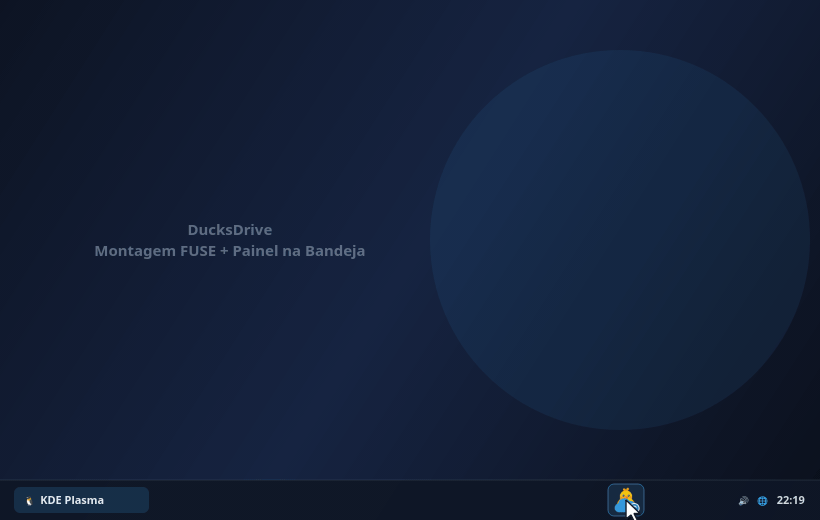
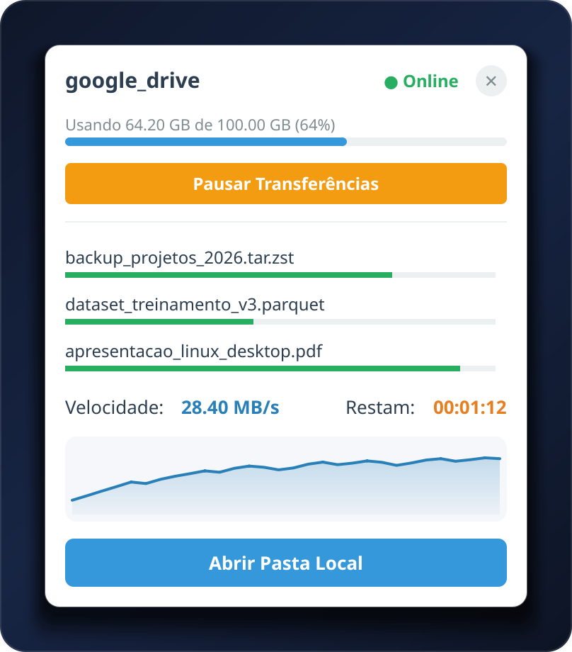
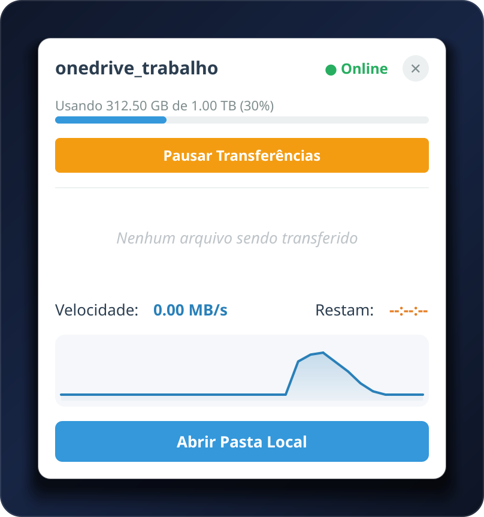
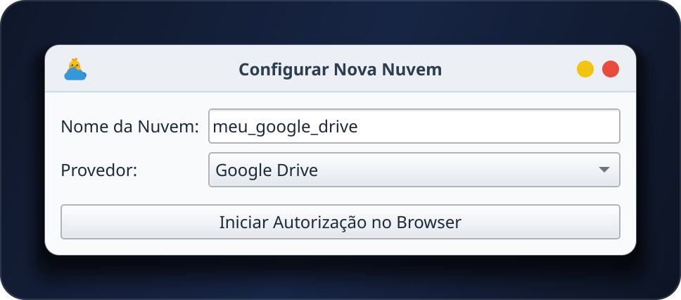
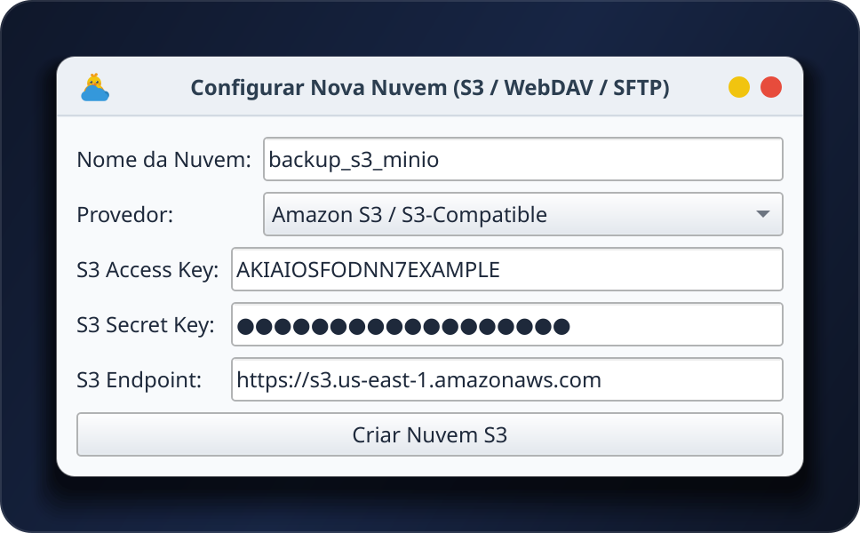
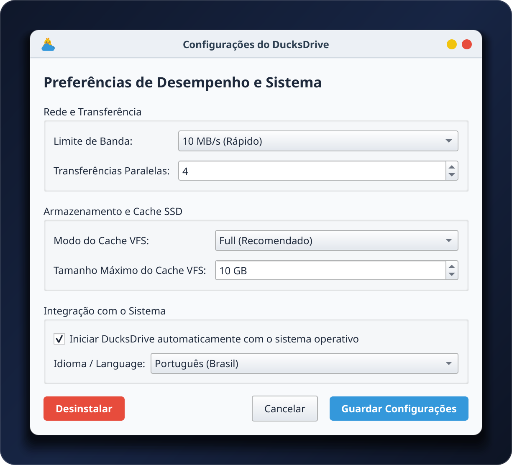

A experiência do cliente do Google Drive do Windows no seu Linux: ícone na bandeja do sistema, painel flutuante com gráfico de velocidade em tempo real e atalho automático no Dolphin, Nautilus, Thunar e Nemo.

Clique no ícone da bandeja para ver o progresso em tempo real, abrir a pasta montada no gerenciador de arquivos ou pausar os envios na hora.


Visualize o espaço usado na nuvem (Quota), pause/retome transferências com 1 clique, acompanhe múltiplos arquivos simultâneos e o gráfico em tempo real via QPainter.


Adicione nuvens OAuth (Google Drive, OneDrive, Dropbox, Box, pCloud) pelo navegador ou configure S3/MinIO, Nextcloud/WebDAV, Mega, FTP e SFTP direto na janela.

Ajuste limite de banda (--bwlimit), modo e tamanho máximo do cache VFS no SSD, transferências paralelas, idioma (PT-BR / EN-US) e inicialização automática.
Compatível com KDE Plasma, GNOME, XFCE, Cinnamon e qualquer ambiente com suporte à bandeja do sistema.
Clique no ícone da bandeja para abrir o painel flutuante com progresso por arquivo, velocidade em MB/s, tempo restante (ETA) e histórico gráfico renderizado com QPainter.
Monta via FUSE em ~/CloudDrives/{remoto} e adiciona o atalho automaticamente na barra lateral do Dolphin (KDE) (com backup automático do user-places.xbel.bak), Nautilus, Thunar e Nemo.
Configure --bwlimit (ex: 10M) direto pela interface para evitar que uploads grandes saturem sua rede ou aumentem o ping em jogos online.
Defina o limite de espaço usado pelo cache no seu SSD (--vfs-cache-max-size) e a quantidade de transferências simultâneas (--transfers) sem tocar em arquivos de texto.
Um QTimer vigia o processo FUSE em segundo plano sem travar a interface. Ao fechar o app, ele aguarda até 10s para garantir que o cache seja gravado com segurança na nuvem.
Protegido com QLockFile para evitar conflitos na porta RC do rclone e equipado com RotatingFileHandler (até 5 MB) em ~/.local/share/ducksdrive/.
O instalador detecta automaticamente sua distribuição Linux, instala o rclone e o fuse3, configura o ambiente isolado e cria o atalho no menu de aplicativos.
Você também pode baixar o pacote portátil DucksDrive-x86_64.AppImage que já traz o binário do rclone embutido, ou gerar o seu próprio AppImage localmente com um comando: